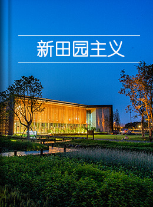

思考与主张Thoughts and Propositions

-
田园综合体理论
欧美日本的美丽小镇，它的长成经历了百年的沉淀。但中国的乡村现代化，人们是等不及的。从我们目前的情况来看，能不能用一种好的方法经历这个过程，是否可以用五年十年的时间，用开发建设的方式，打造中国乡村的美丽田园？
阅读
- 
-
新田园主义
新田园主义，是一种城乡建设方法论，也是一种生活方式理念。我们发现自己在尝试搭建一套乡村建设的理论体系，并作为田园综合体实践的理论支撑。
伴随过去几年实践中的思考和对未来的展望，在《田园综合体模式研究》的基础上，我们提出“新田园主义十大主张”，用以倡导，并将在此思想框架指导下努力践行。
阅读